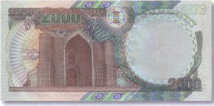
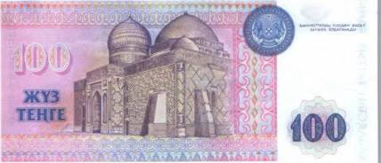
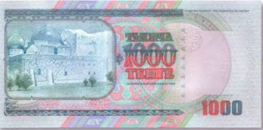
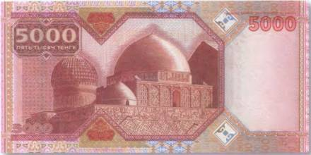
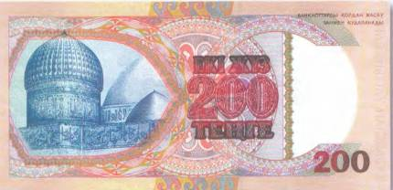
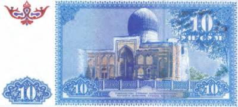
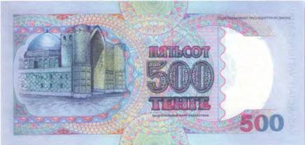
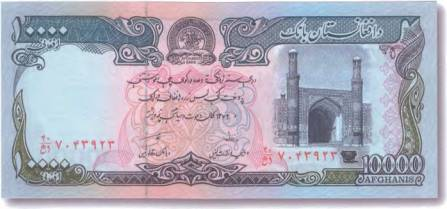
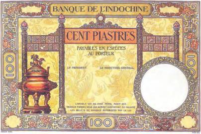

Тайны бумажных денег : О мудреце, летавшем на белом верблюде

На оборотных сторонах всех казахстанских купюр, начиная со 100 тенге образца 1993 г. и заканчивая памятной банкнотой с номиналом в 5000 тенге 2001 г., присутствуют изображения одного и того же здания — мавзолея Ходжи Ахмеда Ясави в городе Туркестане. Это пока единственный в Казахстане памятник материальной культуры, включенный в список Всемирного наследия ЮНЕСКО. И хотя кому-то может показаться, что там запечатлены различные исламские постройки, это не так. Просто на каждой купюре продемонстрированы отдельные фрагменты этого здания и виды на мавзолей с разных сторон. Например, на боне в 2000 тенге мы видим центральный вход в здание, заключенный под своды высокой арки (рис. 30).


Этот величественный портал обращен на юго-восток. Его ширина составляет почти 50 м, а пролет портальной арки чуть более 18 м. А вот на 100 тенге 1993 г. мавзолей показан сзади. Этот изысканно украшенный портал открывается на северо-запад и называется порталом Мухаммада-Ханафии. Через него посетитель попадает прямиком в усыпальницу Ясави (рис. 31).
Ходжа Ахмед Ясави (ок. 1105–1166), в отличие, к примеру, от «Живого царя» узбеков, вполне реальная историческая личность, несмотря на то, что легенд, связанных с его именем, ничуть не меньше [6]. В энциклопедических словарях этого человека называют философом и поэтом, проповедником суфизма и просто мистиком. Его перу также приписывают сборник философских сочинений «Книга мудрости» («Диван-и-хикмет») или просто «Хикметы», который дошел до нас в виде более поздних (XV в.) арабских каллиграфических копий. Еще при жизни этот человек пользовался славой великого мудреца, чтобы послушать его проповеди, люди приходили издалека.

Ясави, как и многим суфии до него, проповедовал тарикат («путь истины»), смысл которого заключался в отрешении от земных благ и регулярной медитации с единственной целью — приблизиться к Всевышнему. Приверженцы этого учения считали, что сделать это под силу каждому человеку. А не только пророкам, которым отводилась роль посредников между Богом и людьми.
Отдельные этапы жизни Ходжи Ахмеда Ясави можно проследить по дошедшим до нас письменным источникам. Но очень многое навсегда пропало в реке времени, уступив место красивым легендам.
По одной из них, Ходжа Ясави долго путешествовал в поисках уединения. В конце концов он остановился в месте, которое показалось ему наиболее подходящим для этой цели. Располагаясь на отдых, он воткнул свой посох в землю. И что вы думаете? В том месте из земли забил ключ. По преданию, именно там был заложен город Туркестан. Кстати, чудесный родник, из которого якобы пил сам Ясави, находится у Жума-мечети, в каких-нибудь 150 м к югу от изображенной на банкнотах Казахстана ханаки [7]знаменитого проповедника (рис. 32).
А еще говорят, у Ясави был волшебный белый верблюд, которого он получил в подарок от самого Аллаха. Сидя на нем верхом, Ясави совершал утренний намаз. При этом он начинал молитву в Туркестане, а заканчивал уже в Мекке. Возможно, такое чудо было благодаря тому, что волшебный зверь умел летать. И судя по всему, очень быстро.
По преданию, в возрасте 63 лет Ходжа Ахмед Ясави «покинул» этот мир, поселившись в землянке неподалеку от мечети, в которой прежде читал проповеди. Свой странный поступок он объяснял элементарно: «Достиг я возраста пророка, 63 лет, с меня этого достаточно, нет необходимости жить сверх срока, отведенного пророку». В 63 года умер пророк Мухаммад — его великий предшественник и духовный учитель (ментор). И негоже было ему, простому смертному, жить дольше избранника Всевышнего. Впоследствии неподалеку от его последнего прижизненного пристанища выросло целое подземное поселение, в котором рядом со святым человеком проживали в основном родственники и ученики Ясави.

Вообще же, ученые по-прежнему затрудняются сказать точно, а действительно ли это здание — лишь место последнего упокоения Ходжи Ахмеда Ясави. Уж слишком много тайн и загадок хранят древние стены. Впрочем, не только они. Известно, что мавзолей в Туркестане практически не имеет стабильного фундамента. И это более чем странно. Ведь у Тамерлана работали лучшие зодчие и архитекторы, в числе которых было немало пленных строителей из Ирана. А в случае с изображенным на казахстанских банкнотах мазаром — лучшие из лучших. Они не могли совершить подобной ошибки. Тогда где же фундамент? Еще более загадочным может показаться тот факт, что здание не ориентировано на Мекку. И это отклонение составляет почти 30°. При этом, как во времена Тимура, так и сегодня, данное направление для молящихся мусульман исключительно важно и обязательно.

Строительство ханаки Ясави также окутано многочисленными легендами и мифами. Существует предание, что тысячи людей были задействованы только для того, чтобы все необходимые для строительства материалы как можно быстрее оказывались на месте. При этом ряды рабочих, передававших их из рук в руки по цепочке, растягивались на многие километры. К примеру, город Сауран, где для мавзолея делались кирпичи [8], расположен почти в 40 км от строительной площадки. Кстати, использованные для сооружения мавзолея кирпичи будто бы делались из специального засекреченного раствора, одним из составляющих которого являлось кобылье молоко. По другой легенде, все зодчие и архитекторы, трудившиеся над этим грандиозным проектом, по окончании работ были убиты, дабы никто больше не смог создать чего-либо более прекрасного, чем известная усыпальница (рис. 34).
Так это было или нет, нам уже не узнать. Но что «у могучего мавзолея по плану и замыслу нет преемников в Средней Азии», как выразился выдающийся археолог-востоковед М. Е. Массон, не приходится сомневаться. Благодаря парадному наружному оформлению этого погребального комплекса создается впечатление, что здание украшено пестрыми среднеазиатскими коврами. Это так называемый эпиграфический орнамент, в основу которого заложены тексты религиозного содержания, компонованные в геометрические сетки-гирихи. Тексты из Корана, выполненные канонизированным почерком сульс, можно без особого труда рассмотреть почти на всех представленных тут казахстанских купюрах.
Размеры сооружения впечатляют — стороны прямоугольника в основании ханаки составляют соответственно 50 и 60 м. В высоту же она достигает почти 38 м. А толщина стен центрального помещения — джамаатханы — составляет 3 м. Кирпичный купол, венчающий мавзолей, «подобен небесному своду», он имеет в диаметре чуть больше 18 м и считается самым крупным в Средней Азии. По размерам он превосходит даже таковой у мавзолея самого Тимура Хромого в Самарканде (Гур-Эмир). Изображение этого сакрального, а для мусульман и вовсе священного места встречается на узбекской банкноте 10 сумов 1994 г. (рис. 35).
На стенах портала мавзолея Ходжи Ахмеда Ясави хорошо заметны остатки деревянных балок и не заделанные отверстия от строительных лесов. Их, кстати, можно рассмотреть и на рисунках банкнот Казахстана. Например, на 500 тенге 1999 г. (рис. 36). А внутри некоторых помещений (всего их более 35) недостает отделки. Это связано с тем, что после смерти в 1405 г. Тимура работы были прекращены и уже больше не возобновлялись. Интересно, что такой вот несколько «недоработанный» образ сооружения словно бы иллюстрирует еще одну древнюю легенду, так или иначе связанную с ним. Как только Тамерлан отдал приказ о строительстве ханаки Ясави, работа над ней закипела. Но в первую же ночь поднялась страшная буря, а у недостроенных стен мавзолея внезапно появился чудовищный зеленый бык (по другой версии, огромные буйволы), который в считанные мгновения превратил в груду камней то, что было возведено за день. Люди посчитали это за плохой омен (знак), но как только взошло солнце, вновь принялись за работу. Однако на следующую ночь все повторилось. Зеленое чудовище с ужасными рогами опять не оставило камня на камне. Это обстоятельство повергло Тимура в мрачные раздумья. Раз за разом он спрашивал себя, что же он сделал не так. Ночью эмиру приснился дивный сон.


К нему явился неизвестный старец и предрек, что из затеи его не выйдет ничего путного, пока он, Тимур, не прикажет сначала возвести мазар над могилой наставника Ахмета Ясави — Арыстанбабы. И как только сей наказ был выполнен, строительство мавзолея продолжалось уже без помех.
Другая легенда объясняет отсутствие в центральном куполе комплекса нескольких кирпичей. Однажды любимая жена Тимура, слывшая красавицей, решила полюбоваться на внутреннее убранство мавзолея. Когда же она вошла в казандык [9], все внутри ханаки будто бы осветилось ее неземной красотой. А пораженный увиденным мастер, выкладывавший купол, от неожиданности выронил несколько кирпичей. С тех пор их там и не хватает.
Название центрального зала ханаки «казандык» происходит от большого бронзового котла — тай (казана), который установлен в середине помещения. По преданию, он был отлит мастерами Тимура из сплава семи металлов. Впрочем, из надписи на нем следует, что отлил его 25 июня 1399 г. «Абд ал-Азиз, сын мастера Шараф ад-дина Тебризи». У казана впечатляющие характеристики: он весит 2 т, достигает в высоту 1,64 м, а диаметр у него 2,2 м. И вместимость у него соответствующая — 3000 л! На официальном сайте Национальной комиссии Республики Казахстан по делам ЮНЕСКО указано, что «преувеличенные размеры казана продиктованы древними верованиями тюркских племен: край казана должен находиться на высоте рта человека, который к нему направляется». Изображение этого культового объекта на казахстанских банкнотах пока отсутствует. Но можно смело предположить, что однажды и он займет достойное место на какой-нибудь из банкнот. Схожие предметы, однако, можно встретить на деньгах других стран, например китайских или афганских. Это лишь доказывает, что появление священного казана из мавзолея Ходжи Ахмеда Ясави на купюрах будущих выпусков Казахстана вполне ожидаемо и остается лишь делом времени.

Кстати, котел, второй по величине после туркестанского, запечатлен на вышедшей из обращения афганской купюре в 10 000 афганей 1993 г. (рис. 37).
Он установлен у входа в Джума-мечеть в Герате (Афганистан). Его первоначальная высота оценивается почти в 1,5 м. К сожалению, подставка-постамент этого сакрального сосуда навсегда уграчена. И назвать точную высоту невозможно. Диаметр гератского казана чуть больше 1,7 м. Однако он старше своего собрата из ханаки Ходжи Ясави. Если верить надписи на котле, он был отлит мастером Хасаном ибн Али Исфахани в 1375 г. Интересно, что, по дошедшим из прошлого свидетельствам очевидцев, похожий бронзовый котел находился и в ханаке Джалаледдина Руми в г. Конья.
Многие историки считают, что появление этих обрядовых предметов вблизи или внутри мусульманских святынь так или иначе связано с традициями и обрядами доисламского периода. Известно, что в жизни кочевых племен, например скифов [10], такие котлы играли важную роль. В них не только готовилась пища, но и варились ритуальные напитки. О предназначении туркестанского тай-казана именно для воды следует и из надписи верхнего орнаментального пояса котла. По данным исследований Института археологии им. А. X. Маргулана, «подслащенная вода из котла раздавалась правоверным после пятничной молитвы, когда происходила общественная поминальная трапеза, во время которой бедные и паломники угощались особым образом приготовленным блюдом — „халим“». В то же время легенды, рожденные, скорее всего, еще во времена Тимура, приписывают этому казану волшебные свойства как сосуду, в котором жарилось мясо. Одно из таких мистических преданий приводит в своих записях и М. Е. Массон: «Туша жертвенной овцы, помещенной в огромный котел, чудесным образом наполняла его мясом, в случае если жертва оказывалась богоугодной».

Для религиозных обрядов использовался и древний бронзовый сосуд в форме котла, изображенный на купюре в 100 пиастров, находившейся в обращении в Индокитае с 1925 по 1935 г. (рис. 38).
Такие ритуальные сосуды для вина применялись во время религиозных жертвоприношений душам предков еще в первом — втором тысячелетиях до н. э. Благодаря кропотливой работе археологов и реставраторов они во множестве сохранились до наших дней и теперь украшают как музейные экспозиции во всем мире, так и многочисленные частные собрания предметов декоративного и бронзолитейного искусства древних народов.
И все-таки царем среди такого рода ритуальных артефактов следует считать невероятно огромный бронзовый котел, установленный над могилой суфийского святого Ходжи Бекташа, в его ханаке вблизи турецкого города Кыршехир. В свое время он был пожертвован туда Тимуром Великим. И, по непроверенным данным, был рассчитан… «на 24 быка»!